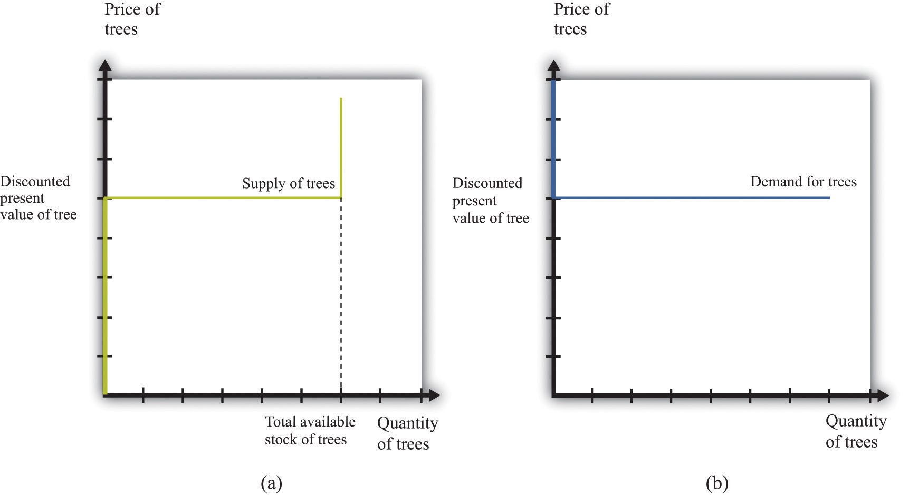
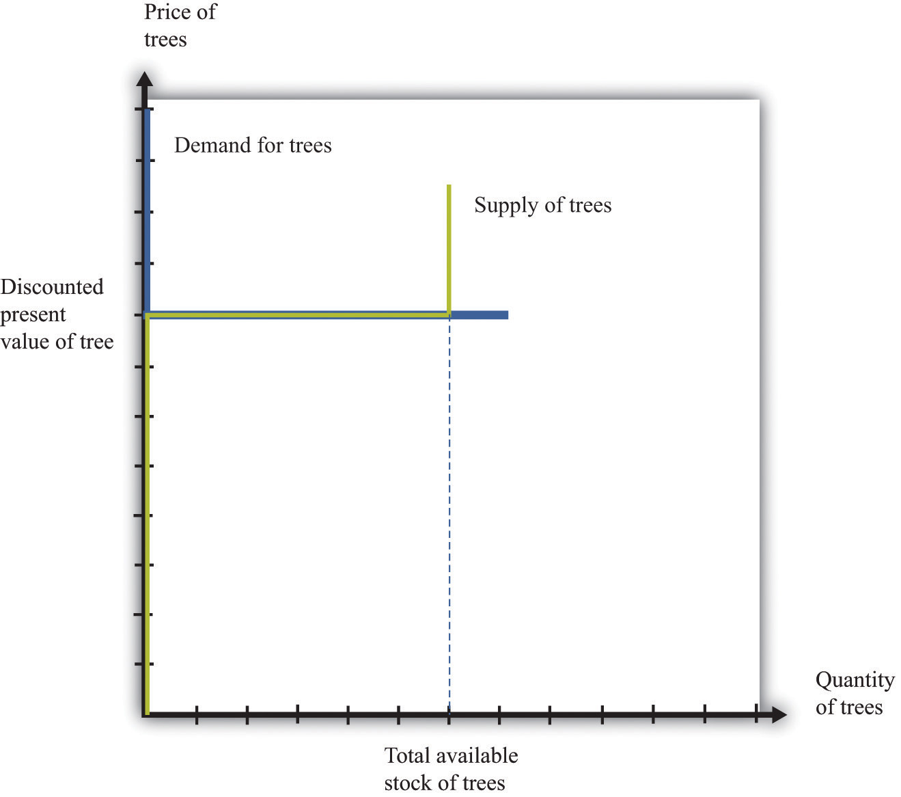
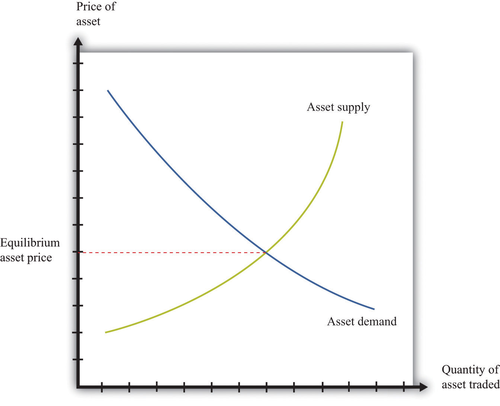

So far we have focused on the value of an asset to an individual: “What is the value to you of the asset (fruit tree, bond, stock, car, house, etc.) you are holding?” Now we want to go a step further and see what the market price is for the asset. We already know that the two are connected. For example, when we valued a bond, we wrote
Part of the value of a bond to you is the price you can sell it for on the market next year. Now we explain that the current price of a bond is closely connected to its current value.
Assets are traded in markets around the world. Typically, there are a large number of (potential) buyers and sellers for any given asset: thousands of people might be willing to buy Microsoft Corporation stock or sell government bonds if they felt the price was right. Also, assets are homogeneous: one US government 10-year bond is the same as another. This means that asset markets are a good example of competitive markets, which means that we can look at asset markets using supply and demand.
Toolkit: Section 31.9 "Supply and Demand"
You can review supply and demand and competitive markets in the toolkit.
To derive the supply and demand curves for assets, we use the idea of arbitrageThe act of buying and then selling an asset to take advantage of profit opportunities.. This is the act of buying and then reselling an asset to take advantage of profit opportunities. The idea of arbitrage is to “buy low” and “sell high.” Arbitrage is usually carried out across two markets to profit from any difference in prices. The strict definition of arbitrage refers to buying and selling where there is no risk, meaning that profits can be made with certainty. A weaker meaning of arbitrage allows risk to be associated with the process.
Figure 10.4 Arbitrage at a Coffee Shop

Imagine you passed a coffee shop and saw the sign shown in Figure 10.4 "Arbitrage at a Coffee Shop". This would make an economist salivate, not because of the prospect of good coffee but because it presents an opportunity for arbitrage. Facing an offer like this, you could immediately go and buy a pound of coffee beans for $10. Then you could turn around and sell the coffee at $12 per pound. You would have made $2 easy profit. Forget about drinking the coffee: just buy and sell, buy and sell, pound after pound—and become a billionaire. This is an example of arbitrage.
Sadly, you will never see a coffee shop making you an offer like this. We are confident of this because any coffee shop that made such an offer would very quickly go out of business. After all, if you can make a profit by buying at a low price and selling at a high price, then whoever is on the other side of these transactions is making a loss.
We can think about arbitrage using the supply-and-demand framework. There are two markets: in one the coffee shop sells coffee, while in the other the coffee shop buys coffee. The demand of potential buyers would be extremely large, and the supply of coffee (from people selling it back) would likewise be very large. With the prices for buying and selling coffee as stated in the sign, demand could never equal supply in these two markets. An arbitrage possibility like this is not consistent with market equilibrium.
Using similar logic, we can argue that the price of an asset will equal its value. To see why, we begin again with an orange tree that will yield an orange worth $1 next year. Owners of this asset value it at
They will be willing to sell the asset at this price but not if the price is any lower. They would definitely want to sell if the price were higher. But buyers can perform exactly the same calculation. They would be willing to buy the asset at this price but not if the price were any higher. They would definitely want to buy if the price were lower. Figure 10.5 "Asset Demand and Supply" shows the supply of and demand for trees in this case.
Figure 10.5 Asset Demand and Supply
(a) Owners of trees are willing to sell at a price equal to the discounted present value of the tree, and the supply curve is flat (perfectly elastic) up to the total available stock of trees. (b) Potential buyers of trees are willing to buy at a price equal to the discounted present value of the tree, and the demand curve is flat (perfectly elastic).
The supply side is shown in part (a) of Figure 10.5 "Asset Demand and Supply". There is a given stock of trees available. For prices below the asset value, no one wants to sell the asset. At prices above the value, everyone wants to sell the asset. So the supply curve is horizontal at a price equal to the asset value, all the way up to the point where every tree is on the market. At that point, the supply curve becomes vertical. The demand function is in part (b) of Figure 10.5 "Asset Demand and Supply". At a price above the discounted present value of the tree, the quantity demanded is zero: no one will pay more than the discounted present value for the asset. If the price equals the value, the demand is flat (horizontal). At a price below the value, the asset looks like a great deal because there are arbitrage opportunities. So demand is very large.
Figure 10.6 Asset Market Equilibrium
Because buyers and sellers place the same value on the tree, the demand and supply curves lie on top of each other at this value, so the price will equal the discounted present value of the tree.
We put these curves together in Figure 10.6 "Asset Market Equilibrium". Both supply and demand are horizontal at a price equal to the discounted present value of the asset. Thus at this price, and at this price only, supply equals demand. We obtain a powerful prediction: assets will be priced at their discounted present value. If we see the prices of assets (such as stocks or bonds) increase or decrease, this model of the asset market tells us to attribute these variations to changes in the discounted present value of dividends.
The supply and demand curves in these figures look rather untraditional. We are used to seeing upward sloping supply curves and downward sloping demand curves. But in the market for the tree, everyone values the asset in exactly the same way. That valuation is given by the discounted present value of the dividend stream. As a result, Figure 10.6 "Asset Market Equilibrium" does not tell us how much people will trade or if they will trade at all. When the price equals the discounted present value, buyers are indifferent about buying, and sellers are indifferent about selling. Everyone is happy to trade, but no one particularly wants to trade. In reality, though, the market for an asset may look much more like a “normal” supply-and-demand diagram, as in Figure 10.7 "Asset Market Equilibrium: A More Familiar View", with an upward-sloping supply curve and downward-sloping demand curve. The reason is that different individuals may have differing views about the discounted present values of the asset, becauseChapter 6 "eBay and craigslist" discusses in some detail the reasons why people trade. We explain that important motives for trade are that people have different tastes and skills. To these we can add the two motives just mentioned here.
Figure 10.7 Asset Market Equilibrium: A More Familiar View
If potential buyers and sellers of an asset differ in their beliefs about the dividend from that asset or differ in terms of their degree of risk aversion, then we obtain demand and supply curves of the familiar form.
For example, suppose some buyers are optimistic about future dividends from a stock, while others are pessimistic. Optimistic buyers will calculate a high discounted present value and have a high willingness to pay. Pessimistic buyers will calculate a lower discounted present value and be willing to pay less for the asset. Such differences in views can hold for sellers as well. Alternatively, suppose some buyers and sellers are more risk-averse than others. The less risk-averse the buyer, the higher the price he is willing to pay because he uses a lower risk premium when calculating his discounted present value. The less risk-averse the seller, the higher the price she is willing to accept.
There is one last, more subtle point. We have been imprecise—intentionally—about what exactly it means for an asset to be risky. Buyers and sellers care not only about assets in isolation but also about how those assets fit into their entire portfolio—that is, the entire collection of assets that they own. An asset that seems very risky to one person may appear less risky to another because he holds other assets that balance out the risks. The riskiness of an individual asset depends on the diversification of the portfolio as a whole.
In Figure 10.6 "Asset Market Equilibrium", all traders in the market valued the asset in exactly the same way, so arbitrage guaranteed that the price equals the discounted value of the flow benefit. In Figure 10.7 "Asset Market Equilibrium: A More Familiar View", there is no immediate guarantee that this will still be true. Even with differences in valuation, however, we expect that the price of an asset is still likely to be (at least approximately) equal to its true discounted present value. In particular, if some traders in the market do not care about risk and are accurately informed about the flow benefit, arbitrage will still keep the market price close to the discounted present value of the stock.
We have not yet explained how supply and demand actually come together in financial markets—that is, who actually makes the market? If you study the workings of a market such as the New York Stock Exchange, you will learn that it works through specialized traders. If you want to buy a stock, you typically contact a stockbroker who communicates your demand to his firm on Wall Street. Another broker then takes that order onto the floor of the stock exchange and looks for a seller. If a seller is found, then a deal can be made. Otherwise, the broker can place your order with another specialist who essentially “makes the market” by buying and selling securities at posted prices. So in the end, the market has some elements of posted prices (take-it-or-leave-it offers) and some elements of a double-oral auction.Both of these are discussed in more detail in Chapter 6 "eBay and craigslist".
Previously, we explained how to value an asset assuming you hold it for one year, receive the flow benefit (the fruit, the dividend, or the coupon payment), and then sell it at the current market price. We said that (assuming no risk premium)
We have also discovered that, in general,
value of asset = price of asset.We combine those two pieces of information to complete our study of the valuation of assets. Imagine an orange tree that lives for two years and yields a crop valued at $1 each year. We already know that we can value the tree as follows:
But now we know that the price of the tree next year will equal the value of the tree next year:
Next year, we can apply exactly the same formula:
Why is this true? The year after next, this particular tree will be worthless because it will be dead. So the value of the tree today is
This is a more complicated formula. It tells us that the value of the tree today is the discounted present value of the flow benefit tomorrow plus the discounted present value of the value of the tree tomorrow—which is itself the discounted present value of the flow benefit the year after. In other words, the value of the tree today is the discounted present value of the flow benefits over the entire lifetime of the tree. What is more, we could use exactly the same logic if the tree were to yield a crop for 3 years, 10 years, or 100 years.
There is one last step. If we again use the idea that the price of the tree should equal its value, then we can conclude the following:
price of tree this year = discounted present value of the flow of benefits from the tree.This logic applies to all assets, not only trees, so we can now apply it to bonds and stocks:
price of bond today = discounted present value of the flow of payments from the bondand
price of share today = discounted present value of the flow of dividend payments.A final note on uncertainty. We have been assuming that dividends are known with certainty. If they are not, then we need to modify the valuation of the stock by (1) replacing “dividend” with “expected dividend” and (2) adding a risk premium to the interest rate. As discussed previously, the adjustment for risk will reflect both the riskiness of the stock and the aversion to risk of investors. Riskier stocks generally have a lower value and a higher expected return.